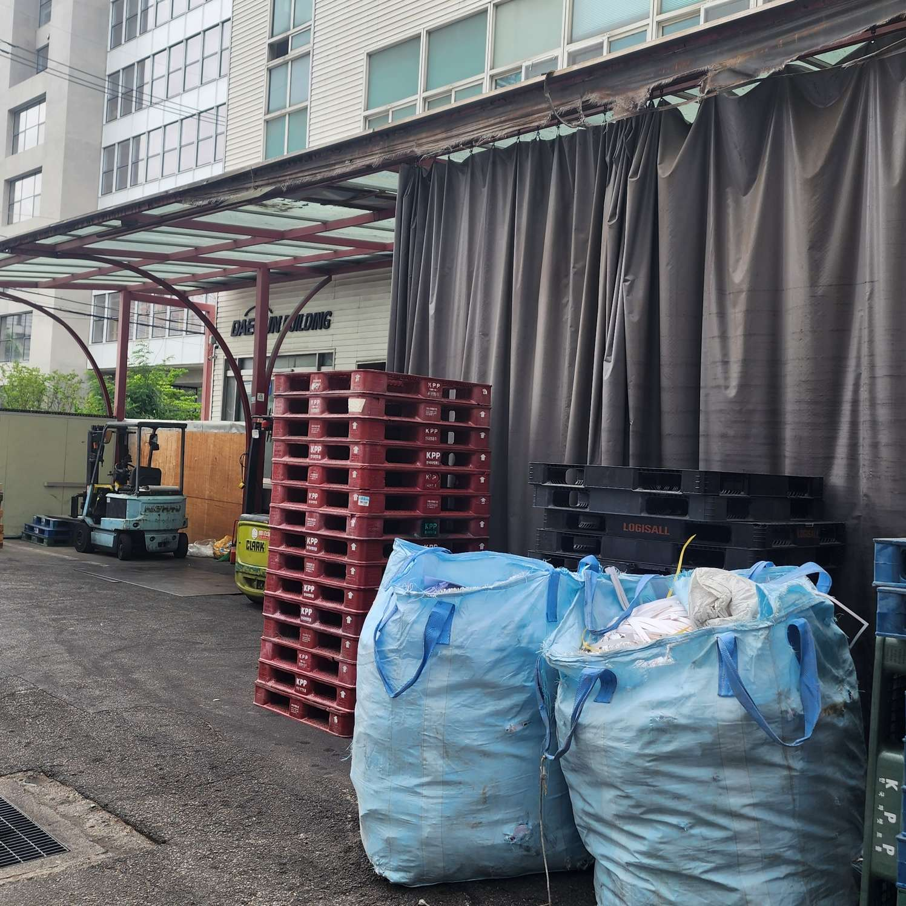
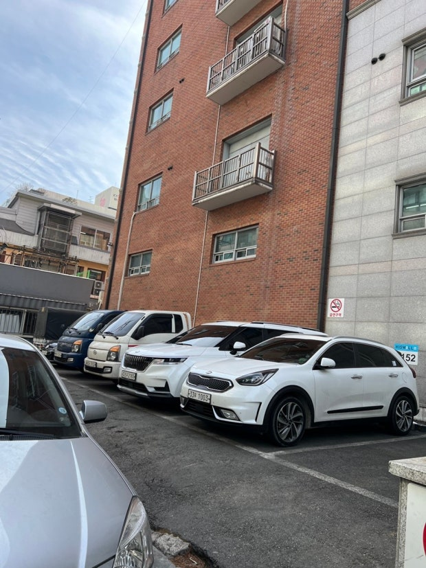
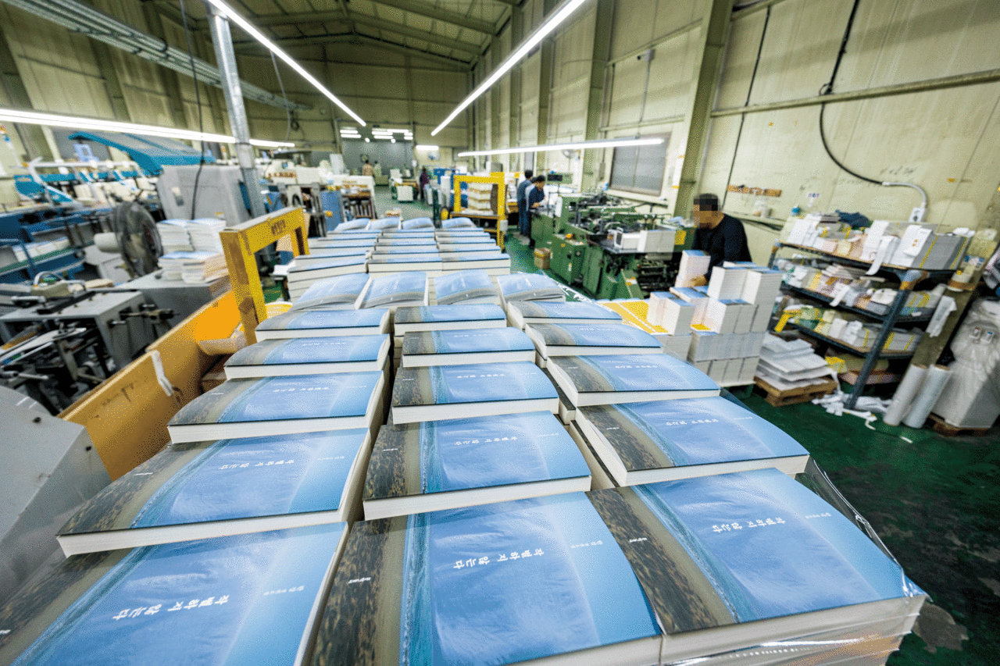

독보적인 산업 생태계
기획, 디자인, 출력, 후가공까지 전 공정이 반경 500m 이내에 긴밀한 물리적 네트워크로 집적되어 있는 살아있는 준공업 도심 제조 유산입니다.
SITE STATUS
성수동 북측 인쇄 단지가 지닌 독특한 공간 구조와 골목 환경을 종합적으로 진단합니다.
SELECTION REASON
성수2가 1동 및 성수동 북측 준공업지역 일대는 성수동의 중심부와 상업지구 이면에 숨겨진 가장 밀도 높은 독자적 산업 공간입니다.

기획, 디자인, 출력, 후가공까지 전 공정이 반경 500m 이내에 긴밀한 물리적 네트워크로 집적되어 있는 살아있는 준공업 도심 제조 유산입니다.

성수역 남측 연무장길이나 카페거리의 급격한 상업화 흐름과 대조적으로, 북측 블록은 물리적·인지적으로 고립되어 있어 재생이 시급합니다.

낮은 스카이라인과 옛 격자형 골목 조직을 원형 그대로 유지하고 있어, 필로티와 닫힌 공장 전면부를 조정하면 매력적인 문화적 보행 통로로 전환 가능합니다.
SITE OBJECTIVES
본 마스터플랜 프로젝트가 다루는 구체적인 공간 분석 및 설계 사이트의 물리적 범위 매핑 도면입니다.

인쇄 골목 가로망의 메인 축과 핵심 연계 구역을 표기한 범위 도면입니다.

필지 밀집도와 노후 건축물, 그리고 준공업 인쇄공장들의 분포도 매핑입니다.

성수역 및 대로변에서 타겟 골목길로 인입되는 주요 보행 결절점 분석입니다.
INDUSTRIAL GEOGRAPHY
성수동 북측 인쇄지구 일대의 용도 분포, 사업체 밀집도, 유동 동선을 다각도로 중첩 분석한 인구·산업 지리 정보 레이어입니다. 좌측의 제안 장치를 클릭하여 입체적으로 비교 분석해 보세요.


STREETSCAPE ANALYSIS

HISTORICAL CONTEXT
과거 공장 마스터플랜 지도를 복합적으로 대조해 보면, 성수동 북측 인쇄거리는 1970-80년대 형성된 소규모 필지 분할 구조를 오늘날까지 거의 그대로 보존하고 있습니다. 이로 인해 소규모 대형 장비를 다루는 소공인 인쇄 공장들이 끈끈하게 군집을 이룰 수 있었던 토대가 되었으나, 현대 도시가 요구하는 보행 인도 및 오픈 스페이스 여백은 턱없이 부족해지는 원인이 되기도 하였습니다.
DETAILED INDICATORS
현재 성수동 북측 대상지가 처한 구체적인 물리적 한계점과 산업적 특수성을 정량·정성적으로 분류한 진단 지표입니다.